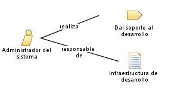

| Rol: Administrador del sistema |
|
 |
| Este rol mantiene la infraestructura de desarrollo, de hardware y de software. Esto incluye instalación, configuración, copia de seguridad, etc. |
| Conjuntos de roles: Gestores, Producción y soporte |
|
Relaciones
 |
| Modifica |
|
| Uso del proceso |
|
Descripción principal
|
Una persona que desempeñe el rol Administrador del sistema necesita una buena comprensión de los
componentes específicos de hardware y software que se utilizan en un proyecto, y las posibles dependencias entre estos
componentes.
|
Personal
| Habilidades |
Un profundo conocimiento del sistema operativo de la plataforma de desarrollo, la red, y los mecanismos, como la
seguridad y la distribución, son necesarios. Otras habilidades clave para este rol también son la resolución de
problemas y el diagnóstico de anomalías.
|
| Propuestas de asignación |
El rol Administrador del sistema se puede
asignar de los modos siguientes:
-
Asigne uno o más miembros del personal para que desempeñen exclusivamente el rol Administrador del sistema. Este es un enfoque que se adopta
habitualmente y que resulta especialmente adecuado para grandes equipos o donde equipos más pequeños compartirán
los recursos de administración centralizados.
-
Compartir una agrupación de recursos de Administrador del sistema en múltiples proyectos. Este es otro
enfoque común que se utiliza en grandes organizaciones en que un departamento de TI tiene unos recursos separados
de cada proyecto de desarrollo -y también recursos subarrendados.
-
Asigne un miembro del personal para que desempeñe el rol Administrador del sistema junto con otro rol técnico como los
roles Implementador o Integrador. Este enfoque resulta adecuado para equipos pequeños o medianos, aunque a menudo
resulta en una productividad reducida en la asignación de roles que necesitará permitir.
-
Asigne a cada miembro del equipo de desarrollo la responsabilidad de sus propias tareas administrativas. Si bien
este enfoque puede resultar útil para equipos más pequeños, reducirá la atención hacia otras tareas, y a menudo
resulta en la pérdida de eficacia con un esfuerzo duplicado.
|
Más información
© Copyright IBM Corp. 1987, 2006. Reservados todos los derechos.
|
|